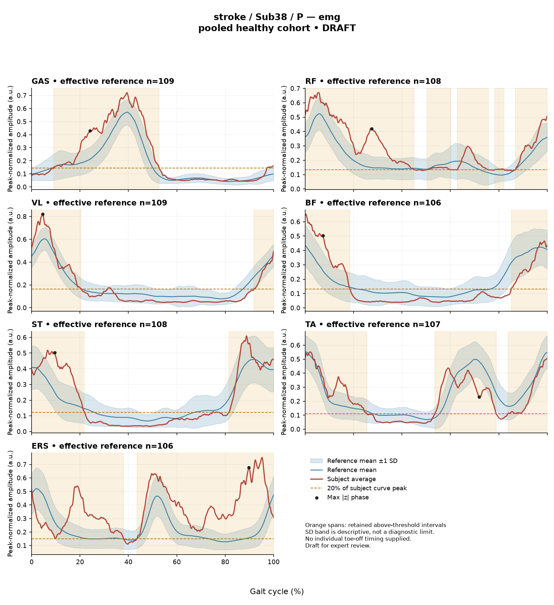

RD97BE42B28B075FA
rater3 / 21 of 150 / Case stroke_Sub38_P / Review row 22
Report: verbatim text
Text file for exact quotations# Gait Report Interpretation — Sub38_P **Interpretation version:** limited-evidence-v3.1-candidate **Scope:** Research interpretation of a supplied quantitative summary. Not a diagnosis, not a treatment recommendation. --- ## 1. Objective Findings **Participant and side.** Sub38_P is recorded in the stroke group; the analyzed limb is the **paretic** side. The released cycle runs from initial contact of that limb (0%) to its next initial contact (100%); these are two successive occurrences of the same event, not a single instant. No intermediate gait event (including individual toe-off) is supplied, so all timing below is expressed as a percentage of the analysis cycle only. **Supplied spatiotemporal values.** - Gait speed **0.81 m/s**, carrying the label "full community ambulator (>0.8 m/s)". This label denotes a speed band only; it does not measure walking independence, safety, or real-world community mobility. - Cadence **99.6 steps/min**. - Step length symmetry index **−13.1%**, computed with the **successive-footfall** definition (each heel at its own initial contact). By the stated sign convention, the negative value indicates the **paretic step is shorter** than the non-paretic step. The alternative instantaneous definition can yield a different value in some subjects; only the successive-footfall value is supplied here. **Reference used.** Deviation scores compare this subject with **138 pooled healthy subjects** (1001 phase points, source: main_cohort_excel). That cohort pools both body sides and all ages and is not age- or speed-matched to this participant. This subject's speed (0.81 m/s) falls inside the healthy cohort's overall self-selected speed span (0.80–1.79 m/s), but sitting inside an overall range does not establish that a genuinely matched reference subset exists, and it is at the low end of that span. Any difference from the reference therefore reflects the combined influence of walking speed, age, side pooling, and stroke-related control changes, which these data cannot separate. Differences from an empirical reference do not by themselves establish disease, a lesion effect, or a clinical diagnosis. **Channels available.** Sagittal-plane kinematics for ankle, knee, hip and pelvis; ensemble-averaged EMG envelopes for GAS, RF, VL, BF, ST, TA and ERS; two co-contraction indices (TA–GAS, RF–BF). **Not supplied in this input.** Individual toe-off and any other intra-cycle event; muscle-specific matched normal timing references; stride-level (stride-to-stride) variability; raw-signal quality checks or expert plots; non-paretic-side EMG or kinematics; coronal- and transverse-plane joint data (explicitly outside the released metric set); per-joint GVS reference values. Age, sex, gait events, time post-stroke and clinical stroke scores may exist elsewhere in the release but are not part of this input — they should be treated as **not supplied here**, not as documented absent recordings. --- ## 2. EMG Envelope and Threshold Findings **How these numbers must be read.** All EMG values are properties of an **ensemble-averaged envelope**, normalized with a shared maximum across available strides before averaging (in this stroke release the denominator is participant-, side- and muscle-specific and is *not* shared across sides). Amplitudes are therefore **relative envelope values**, not neural drive, force or strength, and muscles cannot be ranked as stronger or weaker from them. "Above-threshold intervals" are regions where the averaged envelope exceeds 20% of that same curve's own peak, with a minimum retained length of 3% of the cycle. These are algorithmic properties of the mean curve — not physiological onset, offset, contraction duration, or proof of inactivity outside the intervals — and they do not establish that the same pattern occurs in every individual stride. An interval written X%–Y% with X > Y wraps the 100%→0% boundary, i.e. the mean envelope remains above threshold across the cycle-defining initial-contact boundary. | Muscle | Retained interval(s) (% cycle) | Coverage | Peak norm. amp. | Max \|z\| (location) | |---|---|---|---|---| | GAS | 9–53 | 46% | 0.72 | 2.3 above reference, at 24% | | RF | 50–60; 63–76; 78–82; 87–45 (wraps) | 86% | 0.67 | 3.5 above reference, at 28% | | VL | 92–20 (wraps) | 30% | 0.82 | 2.3 above reference, at 5% | | BF | 85–18 (wraps) | 33% | 0.65 | 2.0 above reference, at 7% | | ST | 82–22 (wraps) | 42% | 0.61 | 2.2 above reference, at 10% | | TA | 54–79; 84–26 (wraps) | 67% | 0.55 | 2.1 **below** reference, at 72% | | ERS | 44–38 (wraps) | 95% | 0.75 | 6.8 above reference, at 90% | **Interval structure (mean-envelope level).** VL, BF, ST, ERS, and the long RF and TA intervals show **boundary continuity**: the averaged envelope remains above its own 20% threshold across the 100%/0% initial-contact boundary. GAS is the one muscle whose retained interval lies entirely within the cycle (9%–53%). RF's detection is fragmented into four retained intervals totalling 86% coverage, with regions between retained intervals around 45–50%, 60–63%, 76–78% and 82–87%. TA has two retained intervals (67% coverage) with a region between them near 26–54% and near 79–84%. ERS has the highest coverage (95%), with the region between the wrapped interval's endpoints lying between roughly 38% and 44%. These gap regions simply did not meet the threshold-plus-duration criteria on the mean curve; they should not be described as periods of muscle inactivity, and conversely the covered spans should not be described as continuous contraction. Anatomically, GAS is a plantar flexor, TA a dorsiflexor, RF/VL knee extensors (RF also a hip flexor), BF/ST hamstrings, and ERS a trunk extensor — but no interval here can be assigned a gait-phase function (weight acceptance, push-off, clearance) or labelled early, delayed, prolonged or normal, because the required event and matched-timing references are not supplied. **Max |z| values.** These are **extreme-value statistics** — the largest absolute standardized difference across all 1001 phase points — and the conventional 2-SD rule does not apply. In this dataset every one of 109 healthy controls exceeds |z| = 2 on at least one muscle, and per-muscle healthy 95th percentiles for this statistic run from 3.65 (ERS) to 4.61 (TA), higher still under leave-one-out. On that basis, the values for GAS (2.3), VL (2.3), BF (2.0), ST (2.2), TA (2.1) and RF (3.5) all fall **below the lowest supplied per-muscle 95th percentile**, so they are not distinguishable from the healthy reference distribution of this statistic. **ERS at 6.8 exceeds every supplied per-muscle 95th percentile**, making it the clearly largest standardized difference in this dataset. The location of a max |z| (e.g. 90% for ERS, 28% for RF) marks where the standardized difference from the phase-specific reference mean is greatest — it is not necessarily the time of peak envelope amplitude and identifies no gait event. "Above reference" means above the reference **mean** at that phase point, not above a healthy percentile limit; TA's single "below reference" entry at 72% is likewise relative to the phase-specific mean. **Co-contraction indices.** CCI here is the Falconer–Winter whole-cycle overlap index of the normalized envelopes (2 × common area / summed areas). It is not simultaneous activation time, not muscular force, and not phase-specific; it can be non-zero even where detected bursts do not overlap, because sub-threshold envelope activity contributes. It is also method-dependent — values and thresholds from other studies or processing pipelines cannot be transferred. - **TA vs GAS = 0.38**, essentially at the supplied healthy median of 0.39 and within the 2.5th–97.5th percentile interval 0.24–0.59. - **RF vs BF = 0.71**, slightly above the supplied healthy median of 0.68 and within the interval 0.48–0.83. Lying inside these empirical intervals does not establish physiologically normal co-activation or normal muscle function; lying outside would not establish pathological co-activation, stiffness or impaired motor control. --- ## 3. Kinematic and Reference Comparisons All joint values are **sagittal plane only**; no coronal or transverse data are included, so nothing can be said about frontal- or transverse-plane mechanics. | Channel | Sagittal ROM | GVS | |---|---|---| | Ankle | 15.9° | 5.39 | | Knee | 46.1° | 5.35 | | Hip | 40.6° | 1.70 | | Pelvis | 2.5° | 0.99 | **Composite (GPS-like) score = 3.92** — the RMS of the four sagittal GVS values, not the validated 9-variable GPS. Against the supplied composite reference (median 5.1, 95th percentile 10.7), this subject's composite lies **below the healthy median**, i.e. the overall sagittal waveform difference from the pooled reference is smaller than that of the typical healthy reference subject on this index. Within the composite, the ankle (5.39) and knee (5.35) contribute the largest per-joint differences and the hip (1.70) and pelvis (0.99) the smallest. GVS and the GPS-like composite are **summary magnitudes of difference from the stated reference across the cycle**: they do not indicate the direction of the waveform difference (e.g. more flexed vs more extended), do not localize the difference to a phase, and do not identify a mechanism. ROM values on their own likewise do not establish a clinical restriction — no matched ROM reference is supplied for these joints, and the pelvic ROM of 2.5° in particular cannot be judged without an appropriate comparison and knowledge of the marker/model conventions. The reference here is a **pooled calibration cohort of 138 subjects**, not a matched leave-one-out normal limit. Its percentiles should not be read as individualized normal limits for this participant. Because the reference is neither age- nor speed-matched and this subject walks near the lower edge of the reference speed span, slow-walking effects and stroke-related control changes remain confounded; the comparison can characterize *difference from this reference*, but cannot attribute that difference to stroke pathology or establish any clinical diagnosis. The same limits would apply to a control participant compared against this reference. --- ## 4. Questions for Further Clinical Assessment The following are open questions raised by the limits of this summary; none presupposes that the issue has been observed, and none implies a management decision. 1. **Event timing.** Can individual toe-off (and other intra-cycle events) for this limb be retrieved from the release so that envelope intervals and max-|z| locations can be placed relative to this participant's own stance/swing transition rather than reported as raw cycle percentages? 2. **ERS channel.** The ERS max |z| of 6.8 (at 90%) and 95% coverage stand apart from all other channels. Is there any independent information — raw-signal quality review, electrode placement notes, cross-talk or movement-artifact screening — that would help determine whether this reflects a recorded trunk-extensor envelope pattern, a normalization artifact (a low participant/side/muscle-specific denominator compresses the dynamic range and raises relative coverage), or a signal-quality issue? None of these has been assessed here. 3. **Stride-level behaviour.** Are single-stride envelopes available? The supplied averages cannot show whether the retained intervals and boundary continuity are consistent across strides or driven by a subset of them. 4. **Contralateral comparison.** Is a non-paretic-side dataset available for this participant? Note that EMG amplitudes could not be compared directly across sides, since the normalization denominator is side-specific. 5. **Reference matching.** Is a speed- and age-matched (ideally leave-one-out) healthy subset available? At 0.81 m/s the participant sits at the lower margin of the reference speed span, and a matched comparison would clarify how much of the observed deviation is attributable to walking speed. 6. **Step-length definition.** Would the instantaneous step-length definition yield a materially different symmetry index for this subject? The two definitions diverge in some participants, and only the successive-footfall value (−13.1%) is supplied. 7. **Out-of-plane and clinical context.** Are coronal/transverse kinematics, and the stroke-cohort fields not included here (time post-stroke, clinical scores, age/sex), available in the source release for a fuller interpretation? --- *All statements above are constrained to the supplied mean-curve metrics, detected intervals and reference values. Information not contained in this input is described as not supplied here, which is distinct from being absent from the source dataset.*
Coverage rows
| Excel row | ID | Required content | Components |
|---|---|---|---|
| 118 | R133 | Report walking speed 0.81 m/s AND identify it as near the lower end of the supplied 0.80-1.79 m/s range AND make clear that being in range does not establish speed matching. | AND: speed 0.81 AND near the lower end of the supplied span AND in-range does not establish matching. Same three-component structure as approved Sub50 C01. |
| 119 | R134 | Identify ankle AND knee as the relatively larger reference-relative sagittal joint-curve differences, without requiring their exact ordering. The GPS-like value 3.92 may optionally be compared descriptively with the supplied pooled median 5.1. | AND: ankle and knee relative prominence. Exact GVS values and the composite comparison are optional. Do not require an all-joints-small statement or infer normality, recovery or joint-specific normal limits from the pooled composite background. |
| 120 | R135 | Describe ERS envelope above its phase-specific reference mean at approximately 90% of the analysis cycle (displayed max |z| 6.8). Within each route, muscle identity AND mean-relative direction AND approximate cycle location are required. Exact max-|z| repetition is optional. | Required for each route: muscle identity AND direction relative to the phase-specific reference mean AND approximate cycle location. Optional: exact max |z| value, comparison with the supplied endpoint span (descriptive only). Prohibited: percentile classification, gait phase, physiological onset, severity. |
| 121 | R138 | Describe the supplied successive-footfall step-length index -13.1% and its meaning: the paretic step is shorter. | AND: displayed index and the direction supported by its sign. Optional: formula, definition wording. Acceptable phrasing for small displayed values: "a small difference with the paretic step slightly shorter/longer" (not a cutoff). Prohibited: restating the index as a percentage shortening (E01), severity grades, whole-gait symmetry generalization (E07 issue, not an omission). |
| 122 | G03 | Express a meaningful limitation of reference comparability AND why the comparison cannot establish disease effects or clinical diagnosis; for controls it cannot establish disease or overall normality. One statement may also support a case requirement. | AND: comparability and inference limitations |
Exact system input
Saved fileDraft a research gait-report interpretation for a physical therapist or physiatrist using only the supplied quantitative summary. This is a limited-evidence interpretation task, not diagnosis or treatment selection. Rules: - Describe the participant's actual group and side, available findings, and missing channels accurately. Healthy-group membership does not prove normal physiology; deviations from an empirical reference do not by themselves establish disease. - Treat detected EMG intervals and coverage as properties of an averaged envelope under the stated threshold and duration rule. Do not convert them into physiological onset, offset, duration, continuous contraction, or inactivity outside the intervals. You may describe reported coverage, retained intervals and boundary continuity at the mean-envelope level. Do not infer the same pattern in every individual stride. Say no below-threshold segment only when the supplied evidence establishes that; a rounded coverage value or no retained interval alone does not establish it. - Individual toe-off and matched muscle-specific timing references are not supplied in this task. Use percentages of the analysis cycle. When the input explicitly identifies an initial-contact boundary, you may name that boundary or describe numerical proximity to it. Do not assign stance/swing, loading response, pre-swing, mid-stance or another event to a percentage, or substitute a conventional 60% split. Anatomical muscle actions may be named, but do not map an interval to a gait-phase function such as clearance, push-off or weight acceptance. Do not characterize timing as normal, early, delayed or prolonged without the required evidence. - Respect the supplied normalization method. Relative envelope amplitude is not strength or force, and average curves do not establish stride-to-stride variability. - Report CCI as a whole-cycle overlap index of normalized EMG envelopes. You may compare it with the supplied empirical interval or a supplied median, including proximity to an endpoint. Do not invent an unavailable median. Being within that interval does not establish physiologically normal co-activation or normal muscle function; being outside it does not establish pathological co-activation, stiffness, impaired control or a diagnosis. CCI is not simultaneous activation time, muscular force or a phase-specific result. It depends on normalization and envelope methods; do not transfer values or thresholds from other studies or algorithms. - Describe GVS and GPS-like as summary differences from the stated reference. Neither localizes waveform direction or phase; ROM alone does not establish a clinical restriction without an appropriate comparison. Do not treat pooled calibration percentiles as matched leave-one-out normal limits. - Where using a reference comparison, convey both limited comparability and the inability to establish a disease effect or clinical diagnosis from that comparison. One clear explanation per report is enough; age and speed need not be recited as separate checklist words. A speed inside an overall range does not prove that an appropriate matched reference exists. Apply these limits to controls as well. - The location of maximum |z| is the largest standardized difference from the reference, not necessarily the time of peak envelope amplitude or a gait event. Above/below reference in an EMG row means relative to the phase-specific reference mean at that location, not relative to a healthy percentile limit. - Preserve numerical direction and the displayed precision. Do not invent values, clinical severity grades, statistical significance, or unavailable reference values. Descriptive comparisons with supplied values remain allowed. Near-boundary rounded values do not justify classifying hidden unrounded values. - Clinical follow-up questions may ask whether a mechanism or measurement issue exists; do not presuppose it has already been observed. Do not recommend treatment. If EMG is unavailable, section 2 may simply state that envelope timing, amplitude and CCI cannot be assessed. Reference-only plots do not provide patient EMG. Use exactly these four sections: 1. Objective Findings 2. EMG Envelope and Threshold Findings 3. Kinematic and Reference Comparisons 4. Questions for Further Clinical Assessment
Exact case input
Saved fileCandidate interpretation version: limited-evidence-v3.1-candidate
Draft the four-section report using only this subject's supplied evidence.
Metric definitions (read before interpreting any number below):
- All joint angles and ROM values are SAGITTAL PLANE only. Coronal/transverse data are not included.
- The released EMG curves are ensemble-averaged envelopes. For each participant and recorded muscle, normalization uses a shared maximum across the available strides before averaging; individual strides are not independently rescaled to their own peaks. This pipeline uses the released mean curves without further amplitude normalization. In the checked stroke release, the denominator is participant-, side-, and muscle-specific; it is not shared between sides. The local array audit verified 614 evaluable combinations, not all 700; 86 lacked valid nonzero paired samples. Amplitudes are relative envelope values, not absolute neural activation, force, or strength. Do not rank muscles as stronger or weaker from these amplitudes, or infer stride-to-stride variability from an average curve.
- Above-threshold intervals are the regions where the averaged envelope exceeds 20% of that curve's own peak, minimum retained interval 3% of the cycle (by sample count). An interval written as (X%-Y%) with X > Y wraps across the 100%->0% cycle boundary (envelope remains above threshold across the cycle-defining event). An onset of 0% is the analysis-window boundary, not necessarily a physiological onset. "No interval detected" means no region met the threshold + duration criteria; it does NOT mean the muscle is inactive or non-functional.
- CCI is the Falconer-Winter co-contraction index computed on the full continuous envelopes (2*common area / summed areas), so it can be non-zero even when the DETECTED burst intervals of the pair do not overlap (sub-threshold activity contributes).
- The composite kinematic deviation score is the RMS of the per-joint Gait Variable Scores over the sagittal channels provided ("GPS-like", not the validated 9-variable GPS).
- Step length symmetry index: 200*(paretic - non-paretic)/(paretic + non-paretic), in %. NEGATIVE means the paretic-side step is SHORTER. Two operational step-length definitions exist (successive-footfall: each heel's position at its own initial contact; instantaneous: both heels at the same instant) and give different values for some subjects -- the definition actually used is stated next to the symmetry value.
- "Max |z| deviation" is the LARGEST absolute z-score across all 1001 phase points of the cycle, comparing this curve to the healthy-cohort mean/SD at each phase. This is an extreme-value statistic, NOT a single-observation z-score: in this dataset every one of 109 healthy controls exceeds |z| = 2 on at least one muscle, and per-muscle healthy 95th percentiles for this statistic run 3.65 (ERS) to 4.61 (TA) -- higher still under leave-one-out. Do not label a value abnormal by the conventional 2-SD rule; use the healthy reference range given per muscle where provided.
- Healthy-cohort CCI reference (this dataset): RF-vs-BF median 0.68 (2.5th-97.5th pct 0.48-0.83); TA-vs-GAS median 0.39 (0.24-0.59). Composite score reference: median 5.1, 95th percentile 10.7.
- COHORT BACKGROUND (calibration context, not necessarily the exact reference used for this subject -- the actual reference composition is stated in a dedicated line with the subject data below): the full healthy cohort is 138 subjects for kinematics, effective n = 106-109 per muscle for EMG (29 controls have no usable EMG; completeness varies by age), pooling both body sides and all ages; it is not age- or speed-matched to this subject. A leave-one-out run uses one subject fewer than these counts.
- SPEED SUPPORT LIMIT (applies to most stroke subjects in this dataset): the healthy reference cohort's self-selected walking speeds span 0.80-1.79 m/s. If this subject's gait speed is below 0.80 m/s, NO speed-matched healthy reference exists in this dataset -- 41 of the 50 stroke subjects are below that floor. Deviations from the reference then conflate slow-walking effects with stroke-specific control changes, and the two cannot be separated from these data. Describe deviations from the reference as such; do not attribute them wholly to stroke pathology.
- Additional source fields are outside this input. Age, sex and gait events may be available in the release; time post-stroke, stroke clinical scores and a non-paretic-side designation apply only to the stroke cohort, as applicable. Do not claim every listed field exists for every participant. Distinguish not supplied, not applicable and documented absent recordings.
The released paretic-side cycle runs from initial contact of that limb at 0% to its next initial contact at 100%. The cycle boundary may be called initial contact; the endpoints are successive occurrences, not one instant. No intermediate event or phase boundary is supplied.
Model-visible information boundary: the summary contains mean-curve metrics and algorithm-detected intervals, not individual toe-off, matched normal muscle timing, stride-level variability, raw-signal quality checks, or expert plots. Information not supplied here must not be described as absent from the source dataset. Gait-cycle percentages alone do not identify gait phases.
Subject: Sub38_P (group: stroke, affected side: paretic)
Gait speed: 0.81 m/s (full community ambulator (>0.8 m/s)) [The ambulation label denotes a speed band only, not measured walking independence, safety or real-world community mobility.]
Cadence: 99.6 steps/min
Step length symmetry index: -13.1% (step-length definition: successive_footfall)
Composite kinematic deviation score (GPS-like): 3.92
Deviation reference actually used for this subject: 138 healthy subjects (pooled), 1001 phase points, source: main_cohort_excel.
EMG envelope findings:
- GAS: above-threshold interval(s) 9%-53%, 46% of cycle above threshold, peak normalized amplitude 0.72, max |z| vs healthy reference: 2.3 (above reference, at 24% of cycle)
- RF: above-threshold interval(s) 50%-60%; 63%-76%; 78%-82%; 87%-45% (wraps cycle boundary), 86% of cycle above threshold, above threshold across cycle boundary, peak normalized amplitude 0.67, max |z| vs healthy reference: 3.5 (above reference, at 28% of cycle)
- VL: above-threshold interval(s) 92%-20% (wraps cycle boundary), 30% of cycle above threshold, above threshold across cycle boundary, peak normalized amplitude 0.82, max |z| vs healthy reference: 2.3 (above reference, at 5% of cycle)
- BF: above-threshold interval(s) 85%-18% (wraps cycle boundary), 33% of cycle above threshold, above threshold across cycle boundary, peak normalized amplitude 0.65, max |z| vs healthy reference: 2.0 (above reference, at 7% of cycle)
- ST: above-threshold interval(s) 82%-22% (wraps cycle boundary), 42% of cycle above threshold, above threshold across cycle boundary, peak normalized amplitude 0.61, max |z| vs healthy reference: 2.2 (above reference, at 10% of cycle)
- TA: above-threshold interval(s) 54%-79%; 84%-26% (wraps cycle boundary), 67% of cycle above threshold, above threshold across cycle boundary, peak normalized amplitude 0.55, max |z| vs healthy reference: 2.1 (below reference, at 72% of cycle)
- ERS: above-threshold interval(s) 44%-38% (wraps cycle boundary), 95% of cycle above threshold, above threshold across cycle boundary, peak normalized amplitude 0.75, max |z| vs healthy reference: 6.8 (above reference, at 90% of cycle)
Co-contraction indices:
- TA_vs_GAS: CCI = 0.38
- RF_vs_BF: CCI = 0.71
Joint kinematic findings (sagittal plane):
- AnkleAngles: range of motion 15.9 deg, Gait Variable Score 5.39
- KneeAngles: range of motion 46.1 deg, Gait Variable Score 5.35
- HipAngles: range of motion 40.6 deg, Gait Variable Score 1.70
- PelvisAngles: range of motion 2.5 deg, Gait Variable Score 0.99Reference card
Saved file# Reference context: stroke/Sub38_P Mean/SD reference: 138 controls; method pooled; exclusions: []. Effective reference counts: GAS=109, RF=108, VL=109, BF=106, ST=108, TA=107, ERS=106, AnkleAngles=138, KneeAngles=138, HipAngles=138, PelvisAngles=138. The exact system and user input files define what the model receives. The EMG and kinematic plots are supplementary expert evidence, not model inputs. The plotted mean plus/minus one SD is descriptive, not a clinical normal band. Negative lower EMG bands can result from mean minus SD; they do not imply negative recorded EMG. The max-|z| p95 span in the input is pooled calibration context. Complete muscle-specific LOO thresholds are not supplied; an appropriately indeterminate classification is allowed. Controls are excluded from their own mean/SD reference, but cohort-level calibration has prior reference-data reuse. It is not an independent matched clinical limit. GPS-like is a four-channel sagittal composite, not the validated nine-variable GPS. The pooled median/p95 background is not a matched LOO normality boundary. CCI uses continuous normalized envelopes over the whole analysis cycle. An empirical interval comparison does not establish normal muscle function. Threshold intervals and rounded coverage describe the averaged envelope. Rounded 100% coverage and one interval do not prove absence of short below-threshold gaps. Use the group-specific cycle and normalization provenance in the actual input. No individual intermediate gait events or matched normal muscle timing are supplied. Administrative age and published bilateral speed are not added to this input. Expert-visible plots do not justify requiring unseen direction, phase or morphology. For a new-case requirement, cite exact input evidence. Select clinically useful descriptive content without inferring a diagnosis or severity from rank alone.
Expert reference curves
Only text inputs were supplied to the model. Do not require curve-only findings.
EMG

Kinematics